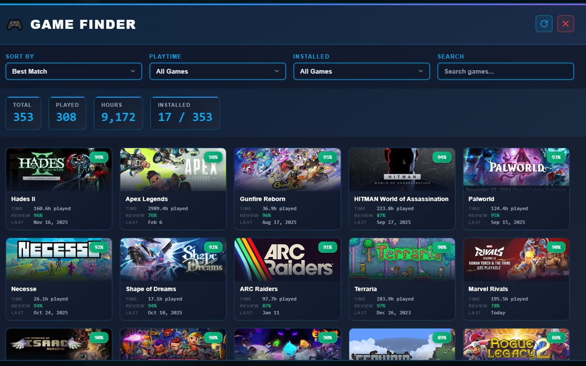
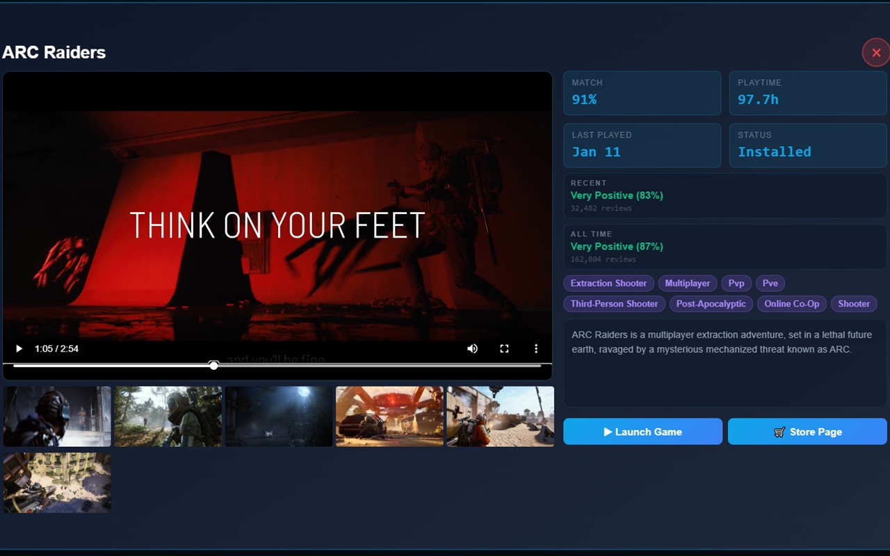
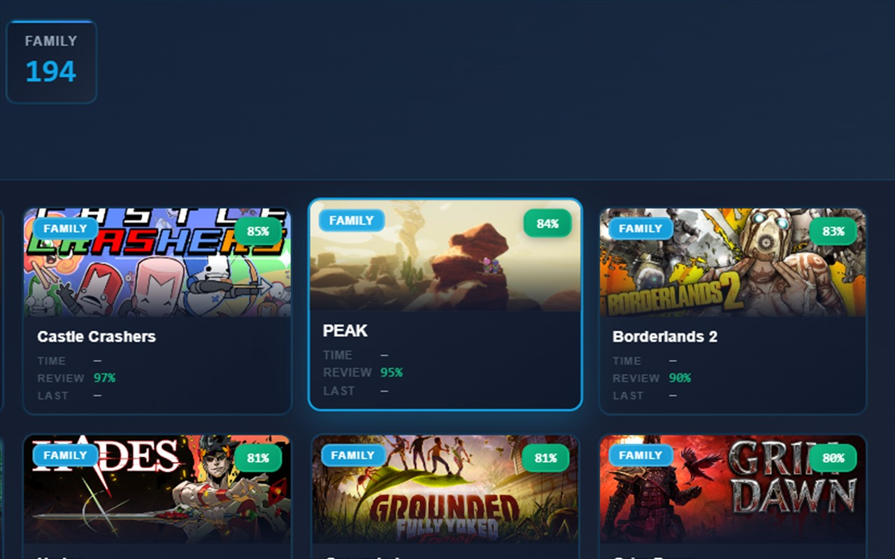
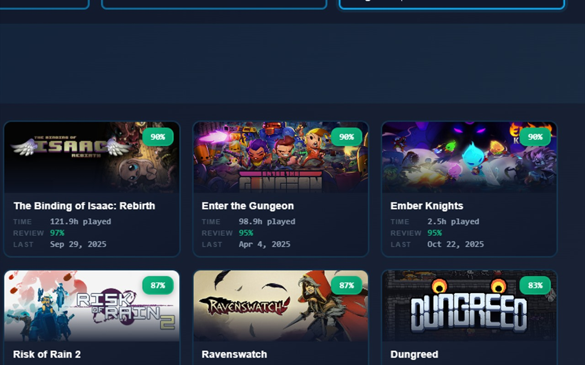
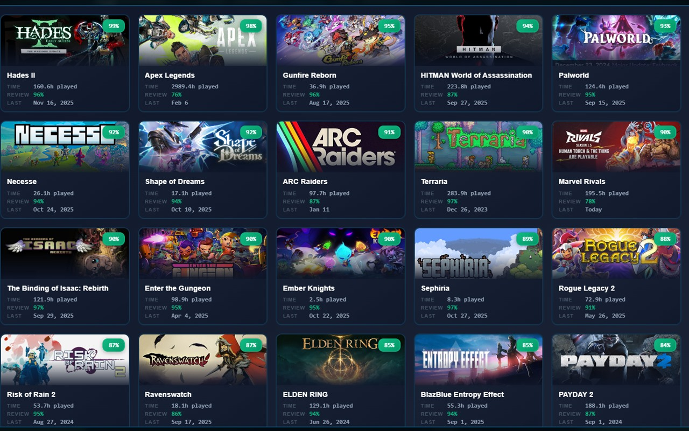
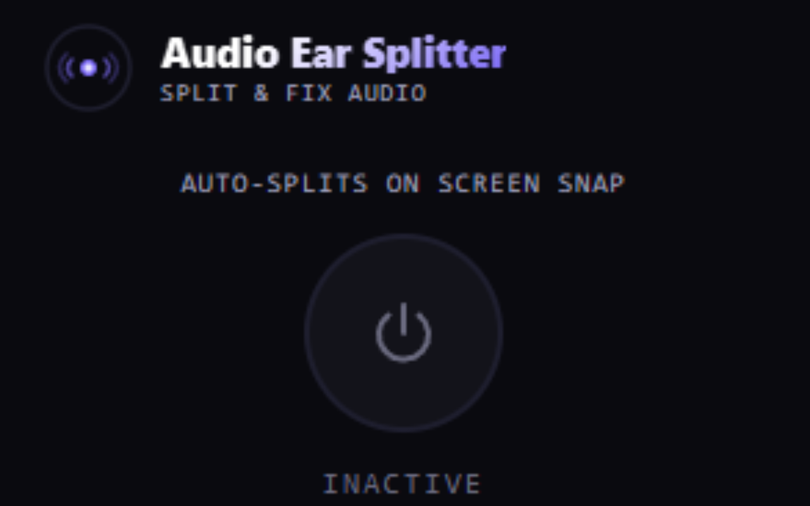
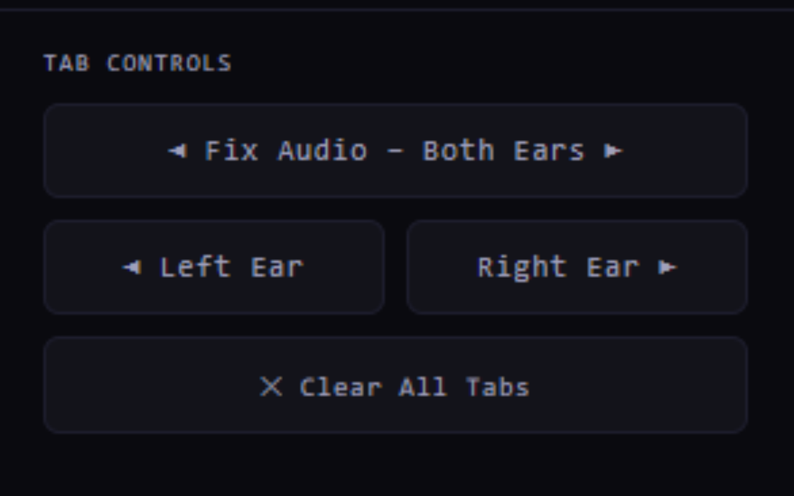

Job Checkmark
AI-made Chrome extension for tracking job applications on LinkedIn and Indeed, viewing salaries at a glance, and filtering out low-pay listings.
View ExtensionConnor Ashley
Data Analyst skilled in Python, SQL, Excel, Tableau, and AI tools.
AI-made Chrome extension for tracking job applications on LinkedIn and Indeed, viewing salaries at a glance, and filtering out low-pay listings.
View Extension





AI-made Chrome extension for sorting your Steam library with smart recommendations, search, filters, and detailed game previews.
View Extension


AI-made Chrome extension for routing audio into left or right channels to fix uneven playback and support split listening.
View ExtensionAI-built interactive dashboard ranking NBA championship paths using playoff injury context and season-long contender injury loss.
View DashboardAI-built interactive dashboard exploring teammate shooting impact with on/off splits and adjusted WOWY metrics from NBA play-by-play data.
View DashboardAI-built interactive dashboard comparing how regular-season free throw volume and FT rate change in the NBA playoffs.
View DashboardAI-built interactive dashboard ranking NBA coaches by team-called after-timeout efficiency using play-by-play data and TS% lift.
View DashboardUsing Python to scrape data from multiple pages, cleaning data in Excel, and building a Tableau-ready basketball analysis.
Cleaning housing data in SQL Server and preparing the dataset for more reliable downstream analysis.
View Code
Data exploration of a Covid-19 dataset in SQL Server to surface trends, comparisons, and summary metrics.
Power BI dashboard analyzing 2025 machinery and electronics imports, sourcing-country exposure, and calculated duties using official USITC data.
Visualizing various datasets in Tableau with dashboards designed for clear storytelling and exploratory analysis.
View Projects